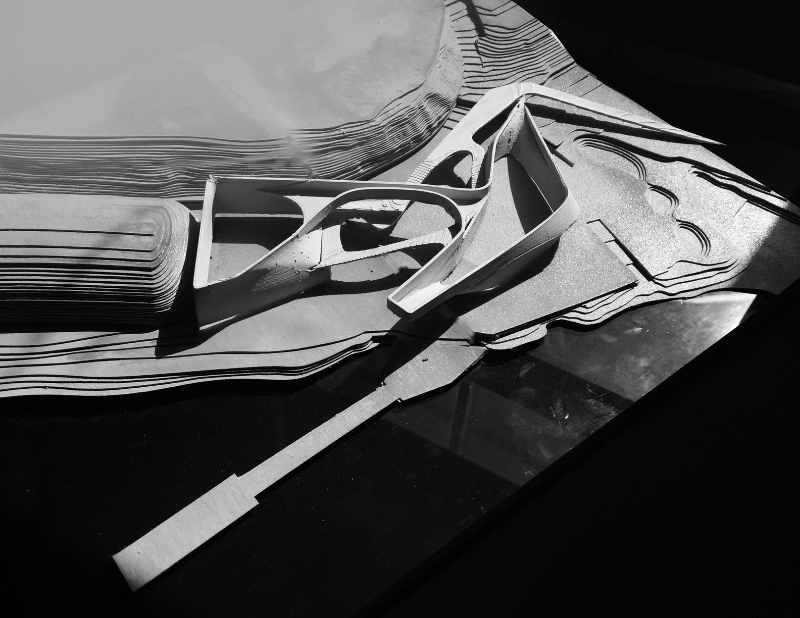

Pratt Institute, Design Studio 302, Spring 2018
Partner: Yeshu Tan, Critic: Leonard Leung
The objective of the project is to explore the cultural and architectural issues intrinsic to the siting of a University rowing boathouse along a public waterway while also incorporating a community-outreach program for local residents and neighborhood youth. The natural flow of circulation from the waterway into the boathouse will activate the site along with energetic atmosphere of the rowing trainers.
The main purpose of the overall massing of the project is to mix community and local residents’ circulation naturally by use. The outdoor stage area which is located in the center of the site and surrounded by two masses is either for the community to rotate their boats and for the local residents to appreciate the view or the events. With the path which is surrounding the perimeter of the building form the ground floor level to the roof, neighbors can enjoy the riverside view by strolling without entering the building and it could be utilize as the standing and sitting area for the performance on the outdoor stage.